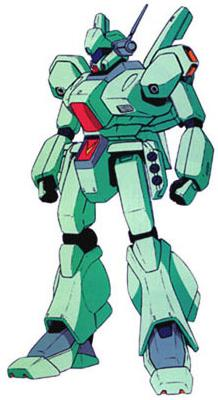
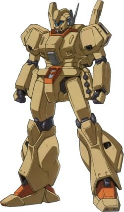
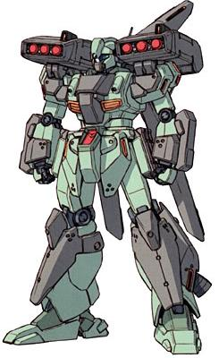
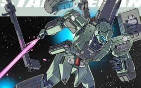
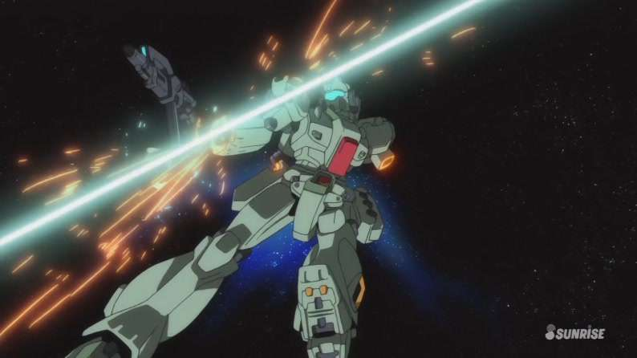

|

|

|

|
经历格利普斯战争和第一次新吉恩战争后，忙碌于又一次军备重建中的地球联邦开始考虑MS部队主力机型的现状与未来，由于军备预算的大幅缩水，让新时期的MS生产、运用思想重新回归低成本和高泛用性这两大基本点。最终，联邦以吉姆系一贯的高通用性和拓展性为参照，设计了一款全新的泛用型MS。新机型的正式型号为RGM-89 杰刚（Jegan），于U.C.0089年末起下线开始逐步装备部队。
杰刚的设计以吉姆系为蓝本，整体设计风格简练，以高泛用性及扩张性为基本指导思想。而为了最大程度节约成本，该型机甚至没有使用高达尼姆合金，而是使用了最新型的钛合金陶瓷复合装甲，当然，这种新改进的钛陶复合装甲的防御性虽然不及高达尼姆γ合金，但依旧有在高达尼姆α合金之上的性能。
推进系统上，杰刚最大的特征就是背包大型化，大大增强了机体的续航时间。背包上部两侧设置同高达Mk-Ⅱ及吉姆Ⅲ类似的可动悬臂，同时肩部侧面安装大推力喷口，提升侧向加速能力。
武装方面，主武装是标准的光束步枪和光束剑的组合。在BR-S-85-C2光束步枪的基础上，阿纳海姆的技术人员还通过加长枪管内收束加速段长度等手段加强了威力，隆德·贝尔队装备的杰刚后来就创造出了直击造成新吉恩军的AMS-119基拉·多加的持盾手连同盾牌一起被破坏的毁伤记录，可见威力相当可观。除了光束步枪、光束剑、头部火神炮等传统的标配外，机体腰部两侧还设置了多用途挂架，一般采用左侧安装三联装手榴弹（带有小型动力装置），右侧放置光束步枪，也有可用于收纳三个步枪弹夹的弹夹盒，具体搭配方式根据任务需要做调整。
初次公开后，便被业界冠以
“MS历史十年总结”
的美称，此后，部队开始逐渐列装，在服役期间的表现证明了其完全符合杰作机这一称号。驾驶过此机的著名机师除隆德·贝尔队上以勇猛而闻名的女机师凯拉·苏中尉外，还有曾担任过RX-79BD-1蓝色命运一号机机师的加岛勇上校等。从U.C.0089年初次展示后的三十余年间，杰刚一直作为联邦军的主力MS而在服役，并出现了为数不少的衍生机型。主要原因当然是这三十年间没有什么大的战事，军费预算一直卡得很紧，而开发新型MS所需费用又比较高有密切关系。但其可靠性、平衡性、泛用性已经足以满足联邦军在这个时期内的需求，才是它被不断反复改修，直到U.C.0120年以前该机仍作为一线机体使用的根本原因。
虽然看起来很厉害但是在作品里总是在挨打（大雾）
-----------------------------------------------------------------------------------------------------------------------------------------------
|

|

|